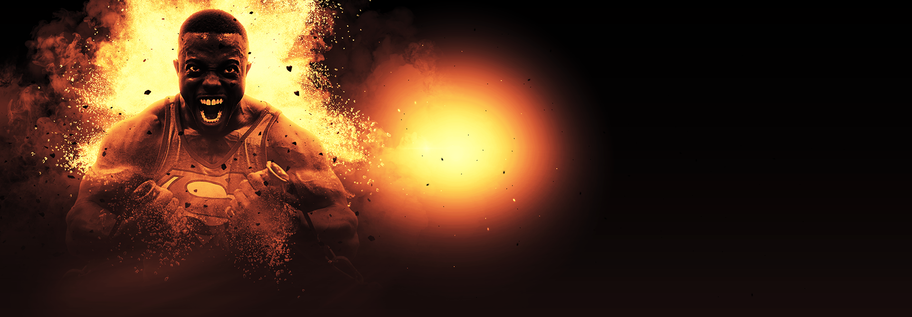
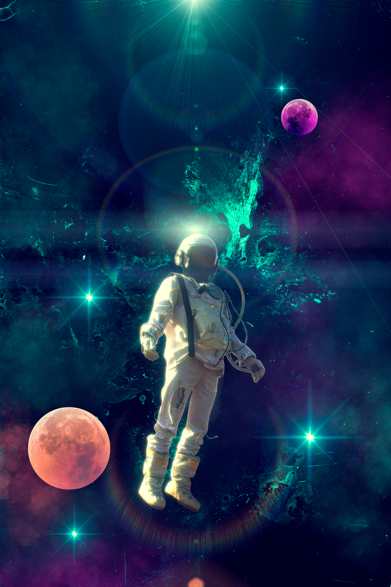
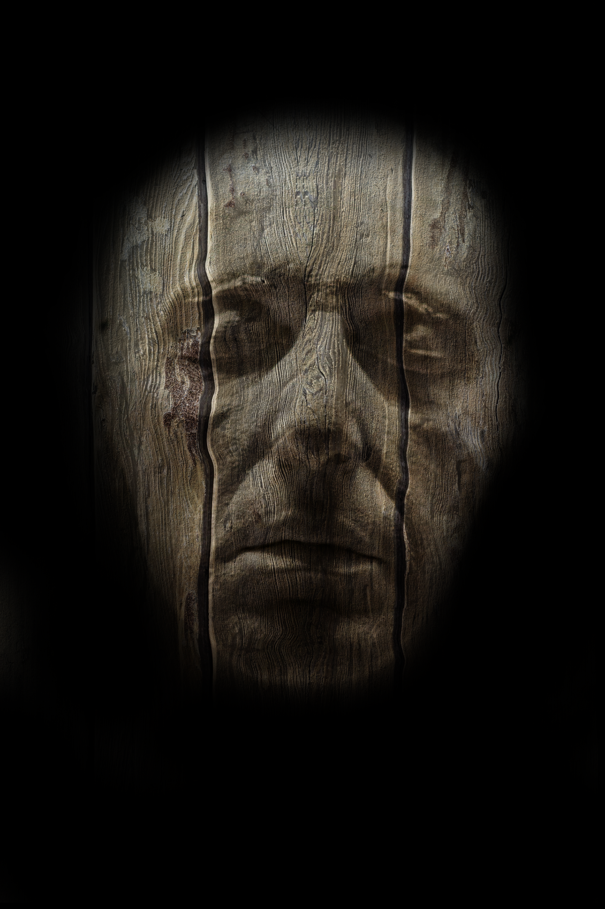
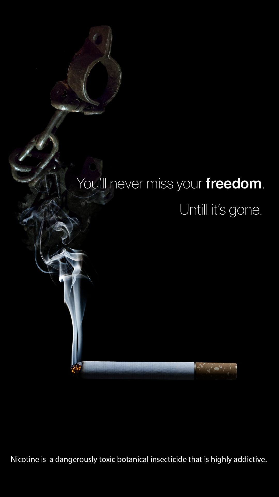
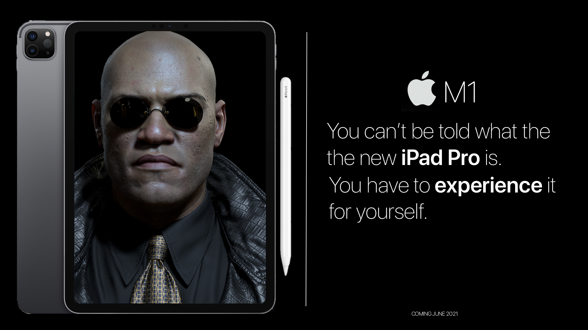

These personal projects serve as my creative laboratory, where I explore composition, lighting, color, realism, visual storytelling, and digital compositing outside the constraints of client work. They provide an opportunity to experiment with new techniques, refine my artistic voice, and continually push my visual design skills in new directions.
While these pieces are not tied to a specific business problem, they have had a lasting influence on my professional work. The visual language, attention to composition, and realistic rendering developed through these explorations inform the instructional graphics, multimedia, motion design, and learning experiences I create for organizations today. The same principles that make an image visually compelling also help communicate complex ideas more clearly and create learning experiences that capture attention without sacrificing clarity.
The examples below represent a selection of personal creative explorations that continue to shape my approach to visual communication, helping me bring originality, craftsmanship, and a strong design perspective to every project I undertake.




